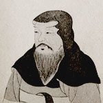
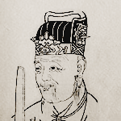
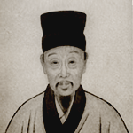
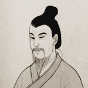
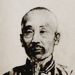
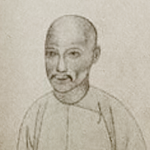
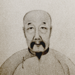
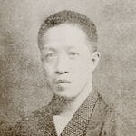
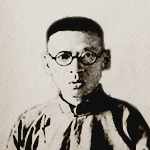

约公元58年—公元149年
说

许慎
字叔重，汉族学者。东汉汝南郡召陵县（今属河南省漯河市召陵区）人[1]，许慎倾尽毕生精力，从事于弘扬和发展中国传统文化。《说文解字》是许慎一生最经心之作。
916年—991年
文

徐铉
南唐，北宋初年文学家、书法家。字鼎臣，广陵（今江苏扬州）人。历官五代吴校书郎、南唐知制诰、翰林学士、吏部尚书，后随李煜归宋，官至散骑常侍，世称徐骑省。
1613年—1682年
解

顾炎武
汉族，明朝南直隶苏州府昆山千灯镇人，本名绛，乳名藩汉，别名继坤、圭年，字忠清、宁人，亦自署蒋山佣；南都败后，因为仰慕文天祥学生王炎午的为人，改名炎武。
不详
字

朱骏声
中国清代文字学家。字丰芑，号允倩，道光乙酉举人，官扬州地教谕。晚年又号石隐，清代大学者，自署元和人。 雍正二年（1724）分江苏省长洲县置元和县。
1735年-1815年
说

段玉裁
清代文字训诂学家、经学家，字若膺，号懋堂，晚年又号砚北居士，长塘湖居士，侨吴老人，江苏金坛人。龚自珍外公。乾隆举人，历任贵州玉屏、四川巫山等县知县。
1736年-1805年
文

桂馥
字未谷，一字东卉，号雩门，别号萧然山外史，桂馥书法晚称老苔，一号渎井。山东曲阜人。乾隆五十五年（1790）进士，官云南永平县知县。
1784年-1854年
解

王筠
字贯山，号箓友，山东安丘县宋官疃人，清代语言学家，文字学家。父亲王驭超，乾隆丙午举人，考取咸安宫教习，历任遂宁、潜山、霍丘、阜阳知县，升寿州知州，为当时名宦。
1869年-1936
字

章太炎
浙江余杭人。原名学乘，字枚叔（以纪念汉代辞赋家枚乘），后易名为炳麟。因反清意识浓厚，慕顾绛（顾炎武）的为人行事而改名为绛，号太炎。
1886年-1935年
说

黄侃
中国近代民主革命家、辛亥革命先驱、著名语言文字学家。初名乔鼐，后更名乔馨，最后改为侃，字季刚，又字季子，晚年自号量守居士，湖北省蕲春县人。1905年留学日本，在东京师事章太炎，受小学、经学，为章氏门下大弟子。
1905年-1988年
文
陆宗达
训诂学家，字颖民（一作颖明），浙江省慈溪人。1928年自北京大学毕业后受黄侃推荐，任上海暨南大学讲师，后曾历任北京大学预科讲师、辅仁大学讲师、北京师范大学教授等。